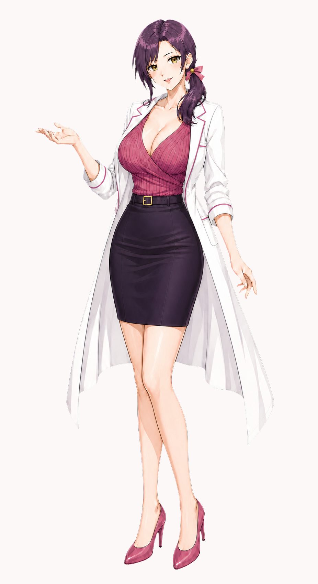

ADULT MENTOR / TEACHER
紫ノ宮 澪 しのみや・みお
- 肩書
- 地域のデジタル健康支援室「リフレーム・ラボ」の認定保健師兼、情報教育コーディネーター。動画では解説役。
- 性格
- 有能、誠実、観察力が高く、感情的にならない。相手を急かさず、失敗を恥にしない大人の包容力を持つ。一方で場を重くしない茶目っ気があり、透の純粋な照れに気づくと、答えを言い切らず反応を一歩だけ待って楽しむ。
- 色気
- 豊かな体型、落ち着いた視線、低い声、距離の詰め方で表現。深いVネックのラップニットと白衣を端正に着こなし、着崩しに頼らず本人の自信を見せる。
- からかい
- 透の視線や動揺を見抜き、ときどき一言だけ揺さぶる。透が赤くなったら追い詰めず、何事もなかったように説明へ戻る。その余裕と切り替えの速さが、かえって透を意識させる。ただし逃げ道を残し、仕事・評価・治療を人質にしない。
- 人間味
- 他人の不安にはすぐ気づくのに、自分の疲れは後回しにしがち。透だけが先に気づくことがある。
- 言葉
- 固定の口癖は持たない。解説は明快だが、透をからかう時は主語や結論をあえて置かず、短い間と視線で続きを考えさせる。「『説明が』、でしょう？」「透くんが、そう思いたいなら」のように、二重の意味を残してから自然に授業へ戻る。